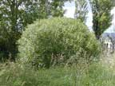
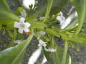
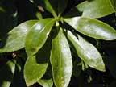
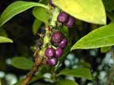
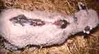

Ngaio
Myoporum laetum
Other names
Description
Shrub or small tree to 10m high, bark brown, thickened furrowed. Leaf buds sticky, blackish. Leaves oblong or obovate, 4 10 cm long, sharply pointed, minutely serrate above the middle, bright green finely dotted. Grow singly from alternate sides of stem. Small white flowers, with purple dots, arranged in clusters. Fruit an oblong, reddish purple drupe, in clusters of 3 6. glands in leaf
Similar plants
Several Australian species of Myoporum may be seen in gardens.
Distribution
A native plant, mainly coastal, but often in lowland forest, found as far south as Otago.
Toxin
Several toxins of which ngaione is the best known of the furanosesquiterpenoid essential oils. Amounts of these oils vary from plant to plant, with the leaves normally the most toxic part. Ngaione is metabolised by mixed function oxidases in the liver and becomes hepatotoxic. Phylloerythrin accumulates in the plasma, imitating a photosensitivity reaction in the skin.
Species affected
Cattle, pigs, sheep.
Clinical signs acute
Cattle: Sublethal cases: A severe photosensitisation is seen, the head is swollen; from the top of the shoulders back towards the tail, the skin swells, breaks, dries and sloughs. Lethal cases: Severe constipation, abdominal pain, small quantities of hard, dry, blood stained faeces passed; dullness, loss of appetite, no rumination; sometimes icteric discolouration of the conjunctiva; the skin on the teats and udder may be swollen and tender and often severely cracked, peeling off after several days in non fatal cases; skin on the muzzle dry and scaly. Sheep: Sublethal cases: Depression and loss of appetite, persisting for a time; acute photosensitisation in sheep exposed to sunlight with oedematous swelling of ears and face which eventually subsides and leads to the ultimate formation of dry scabs over the ears and other exposed portions of the skin.
Clinical signs chronic
Post mortem signs
Cattle: Impaction and intense inflammation of the abomasum; considerable hemorrhage from the mucous lining of the stomach; intestines inflamed and haemorrhagic but relatively empty; centrilobular necrosis and jaundice in the liver; rectum intensely inflamed, impacted with a small quantity of hard faeces; urine deep golden orange coloured. Sheep: A considerable accumulation of yellow peritoneal fluid, liver congested, generalised icterus, urine deep yellow, abomasum and small intestine congested with blood, inflamed, and spotted with pin point haemorrhages; the contents of the rectum hard and dry.
Diagnosis
History of exposure, clinical signs and blood tests (elevated liver enzymes in serum). Identification of ngaio in rumen contents.
Differential diagnosis
There are many potential causes of photosensitivity. Other plants include St John’s wort, and buckwheat. Species of clovers and alfalfa, Erodium and Brassica have also been implicated in primary photosensitisation. Many plants cause secondary (hepatogenous) photosensitisation ngaio is one of these. Others include ragwort and other Senecio species, lupins, and blue green algae. Other causes of photosensitivity (primary) facial eczema, parsley, celery (secondary) lupinosis, Lantana camara, Panicum species. ragwort, blue green algae, carbon tetrachloride. Also other causes of hepatic necrosis
Treatment
Large doses of raw linseed oil and soap and water enema have been recommended in the past. While photosensitivity continues, animals should be offered shade, preferably a dark shed, and symptomatic care given. Secondary skin lesions and suppurations should be treated and fly strike prevented.
Prognosis
Photosensitisation: The skin lesions can heal quite well, and the eventual productivity of the animal depends on the site and severity of the primary lesion, and the degree of resolution.
Prevention
References
Conner H.E. The Poisonous Plants In New Zealand. 1992. GP Publications Ltd, Wellington
Parton K, Bruere A.N. and Chambers J.P. Veterinary Clinical Toxicology, 2nd ed. 2001. Veterinary Continuing Education Publication No. 208
Seawright, A.A. (1982). Animal Health in Australia. Vol. 2. Chemical and Plant Poisons. Australian Bureau of Animal Health, Canberra, Australia.
Surveillance (1980) 7(5): 20 Poisoned possum?
Surveillance (1983) 10(4): 15 Poisonings (Goat)
|  bush |
 |
|
|
 |
|
|
|
 |
||
|
|
 |
|